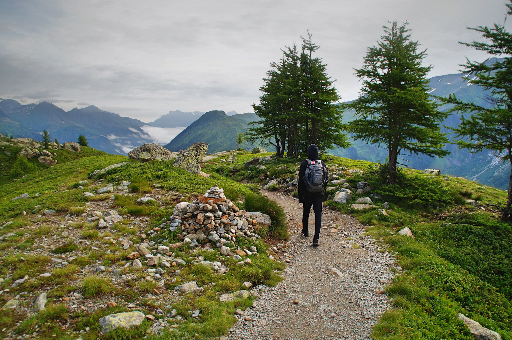
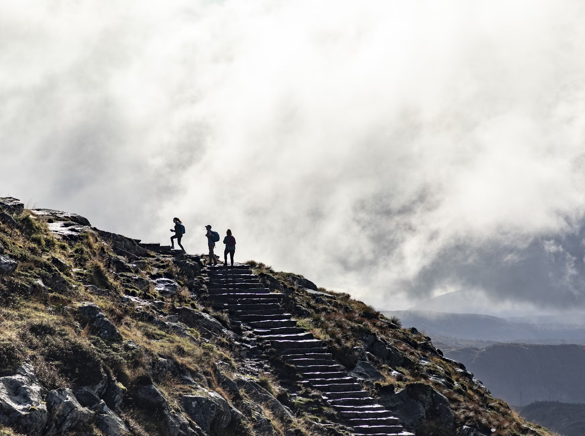

Land-Based Activities
Enjoy exciting outdoor activities on the land surrounding Lochquarry Outdoor Centre.
Hillwalking



Explore the beautiful countryside around Lochquarry with one of our experienced instructors.
Archery


Learn hoe to use a bow and arrow safely and test your accuracy against different targets.
Orienteering


Develop your navigation skills by using a map and compass to find your way aroubd our outdoor course.
Axe throwing


Axe throwing is one oft he most popular activity at lochquarry outdoor centre. Participants enjoy this activity the most among all the other activities.Can be enjoyes as a group or pair acticity. Advance booking needed.
Customer Reviews
The outdoor centre is the best place to go on summer and akso in winter. it is good for both individual and group activities, not only for adults but also for young people.
Very best experience at lochquarry outdoor centre. we keep coming to enjoy allt he outdoor activities with our kids next year too.
Learn more about land-based activities at Outdoor elements
Learn more about archery activities at Archery activities highlight